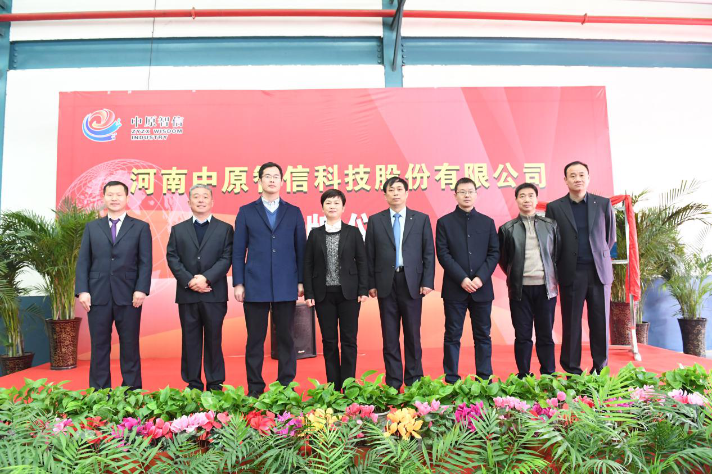
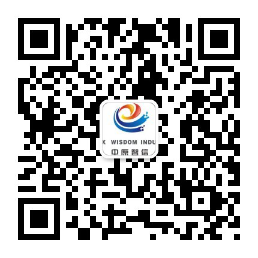

河南中原智信科技股份有限公司简介

河南中原智信科技股份有限公司是由中原内配集团股份有限公司和郑州大河智信科技股份公司共同出资组建的高新技术企业，公司主要围绕汽车整机、零部件及相关装备制造设备的智能化升级改造、机床联网、在线检测、智能仓储等领域的重大关键技术难题提供系统化解决方案。

公司成立伊始即吸引了来自武汉大学北京航空航天大学、郑州大学、河南大学等国内知名学府相关高新技术研发机构的专家人才，组建了一支具有自主研发实力的技术精英团队，攻克了DNC、MES、机器人系统集成、在线检测、智能决策和AGV等相关的核心技术。利用互联网、云计算、大数据等技术手段，帮助客户实现智能化升级改造、减员增效、节能减排，提升综合竞争力，为中国汽车零部件制造行业的产业结构调整和转型升级贡献力量。

公司地址：河南省孟州市产业集聚区淮河大道69号 联系方式：0391-8190221-5941 / 15139108993